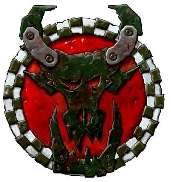
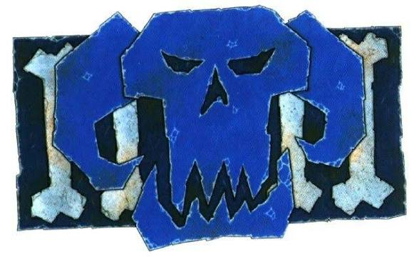
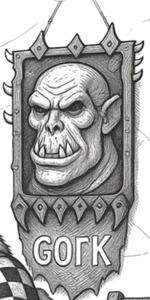
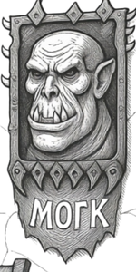

Goffs

Evil Sunz

Bad Moons

DeathSkulls

Blood Axes

SnakeBites

¡Bienvenido a la Waghnet!
Los Orkos son una de las razas más salvajes, numerosas e impredecibles del universo de Warhammer 40,000. Para ellos, la guerra no es un medio para alcanzar un objetivo: es su forma de vida. Cada batalla representa una oportunidad para demostrar quién es el más fuerte, conseguir mejores armas y encontrar un enemigo aún más grande al que aplastar.
Impulsados por un entusiasmo inagotable y una energía caótica, los Orkos convierten cualquier enfrentamiento en una celebración de explosiones, motores rugiendo y combates cuerpo a cuerpo. Donde otros pueblos ven destrucción, ellos solo ven diversión y la promesa de una nueva ¡WAAAGH!
En esta página vas a descubrir cómo viven, cómo luchan y qué hace único a cada uno de sus clanes. Porque aunque todos comparten el mismo espíritu belicoso, cada clan tiene su propia forma de conquistar la galaxia.
Nuestros Lideres Y Dioses
Gorko

"Brutal pero Astuto"
Gorko es conocido por ser "brutal, pero astuto", favoreciendo la fuerza desmedida, la violencia directa y el enfrentamiento cara a cara. Para quienes siguen su ejemplo, la mejor estrategia consiste en avanzar sin miedo, aplastar al enemigo con una fuerza imparable y demostrar quién manda mediante el combate.
Morko

"Astuto pero Brutal"
Morko, por su parte, es "astuto, pero brutal", prefiriendo la sorpresa, los engaños, las emboscadas y el uso de la inteligencia para obtener ventaja antes de asestar un golpe devastador. Sin embargo, incluso la astucia de Mork termina resolviéndose a golpes, porque para un Orko ninguna pelea está completa sin una buena dosis de violencia.

Wazdakka Gutsmek
Perteneciente al clan Evil Sunz, Wazdakka es conocido por conducir una gigantesca motocicleta de guerra equipada con armamento pesado y potentes motores modificados por él mismo. Para este legendario jefe Orko, no existe nada mejor que recorrer el campo de batalla a toda velocidad mientras dispara en todas direcciones.
Las historias cuentan que Wazdakka recorría planetas enteros únicamente para encontrar rivales dignos contra los que competir en carreras o enfrentarse en combate, convirtiendo cualquier guerra en una enorme persecución llena de explosiones.

Ghazghkull Mag Uruk
Thraka
Ghazghkull Thraka es el Orko más famoso y temido de toda la galaxia. Considerado por muchos como el mayor Señor de la Guerra Orko de la era actual, ha conseguido unir incontables tribus bajo un mismo estandarte para lanzar gigantescas ¡WAAAGH! contra los enemigos del Imperio.
Tras sobrevivir a una grave herida en la cabeza, Ghazghkull afirmó haber recibido una visión de los dioses orkos, Gorko y Morko, quienes le revelaron que estaba destinado a liderar la mayor guerra jamás vista. Desde entonces, dedica su existencia a reunir ejércitos cada vez más grandes y sembrar el caos por toda la galaxia.
A diferencia de la mayoría de los Orkos, Ghazghkull posee una inteligencia estratégica excepcional. Sabe cuándo atacar, cómo organizar enormes invasiones y cómo inspirar a millones de Orkos para que lo sigan sin cuestionarlo. Su inmensa armadura, su brutal fuerza física y su carisma lo convierten en una auténtica leyenda viviente.

Boss Snikrot
Líder de los Kommandos, Snikrot es un maestro de la infiltración, las emboscadas y el combate sorpresa. Sus enemigos rara vez llegan a verlo antes de que sea demasiado tarde, apareciendo desde la oscuridad para sembrar el caos antes de desaparecer nuevamente.
Durante años combatió en el planeta Armageddon, donde desarrolló una temible reputación entre los soldados imperiales. Su habilidad para infiltrarse detrás de las líneas enemigas convirtió cualquier selva, ruina o ciudad en un territorio peligroso.
Los 6 grandes clanes
Evil Sunz
Los amos de la velocidad
Existe una superstición muy famosa entre los Orkos: "el rojo va más rápido". Aunque no existe ninguna explicación científica, la energía colectiva de los Orkos hace que, de alguna forma, sus vehículos realmente parezcan funcionar mejor cuando están pintados de rojo. Por esta razón, prácticamente todos los vehículos de los Evil Sunz lucen este color brillante.
Sus Mekboyz son algunos de los mejores ingenieros de la raza orka y constantemente modifican motores para hacerlos aún más veloces, aunque muchas veces terminen explotando. Para un Evil Sunz, una explosión solo significa que la próxima versión deberá ser todavía más rápida.
Bad Moons
Los ricos de los Orkos
Los Bad Moons poseen una peculiar ventaja biológica: sus dientes crecen mucho más rápido que los del resto de los Orkos. Esto los convierte en el clan más rico de todos, permitiéndoles comprar las mejores armas, armaduras, vehículos y cualquier cosa que llame su atención.
Les encanta presumir de su riqueza mediante enormes cañones, armaduras relucientes y decoraciones exageradas. Mientras otros Orkos construyen armas improvisadas, los Bad Moons suelen llevar el equipamiento más caro y potente que pueden conseguir.
Blood Axes
Los estrategas poco convencionales
A diferencia de la mayoría de los Orkos, no creen que cargar sin pensar sea siempre la mejor opción. Estudian a sus enemigos, preparan emboscadas, utilizan cobertura y, cuando es necesario, incluso retroceden para volver a atacar más tarde.
Lo más sorprendente es que no tienen problemas en aprender tácticas militares de otras especies, especialmente de los humanos del Imperio. Algunos incluso han llegado a trabajar como mercenarios para otras razas, algo que muchos Orkos consideran vergonzoso.
SnakesBites
Guardianes de las viejas tradiciones
Rechazan gran parte de la tecnología moderna y prefieren luchar utilizando armas sencillas, montando enormes Squigs y otras bestias salvajes en lugar de vehículos mecánicos.
Para ellos, cuanto más natural sea una batalla, mejor. Consideran que depender demasiado de las máquinas debilita el espíritu guerrero de un Orko.
Son expertos criando Squigs, criaturas que utilizan como alimento, montura, arma e incluso como medicina. Su profundo conocimiento de la naturaleza hace que muchos los consideren los guardianes de las antiguas costumbres orkas.